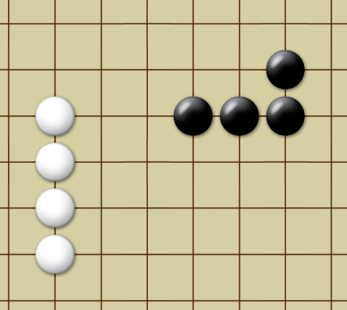

For additional instructions, refer to (All information below was copied from this site)Pente Instructions.
Win by placing five (or more) of your stones in a row, vertically, horizontally, or diagonally, with no empty points between them. Or, win by capturing five (or more) pairs of your opponent’s stones.
Play starts with the board completely clear of stones. The first player (black) begins the game by playing one stone on the center point. Players take turns placing their stones on empty intersections. Stones cannot be moved once placed, except when captured.
Whenever your opponent has two stones (and only two) which are adjacent, those stones are vulnerable to capture. The pair can be captured by bracketing its two ends with your own stones. The captured stones are removed from the board. Captures can be made vertically, horizontally, or diagonally, and multiple captures can occur on a single move.
The game ends immediately when one player captures five pairs, or places five stones in a row. The opposing player has no “last chance” to make a final move. When a player obtains an unblocked row of four stones, called a tessera, a win is imminent. Therefore, an unblocked row of three stones, called a tria, is a serious threat that should be blocked unless a stronger offensive move exists. An unblocked row of three stones, if it contains one gap, is still considered a tria. In the example to the right, black has formed both a horizontal and a vertical tria, while white has formed a tessera and will win with the next move.
It is a customary, but not mandatory, refinement of this game to announce “three” or “tria” when moving to make an open three, and also to call “four” or “tessera” when making four in a row. This is so that one's opponent does not forget to stop the formation of an open four, or five—because there is no fun in winning a game owing to the blunder of the adversary; at least there shouldn't be. The idea is to win in spite of one's opponent seeing every threat. Pointing out a player's errant move also demonstrates one's own confidence and mastery of play.